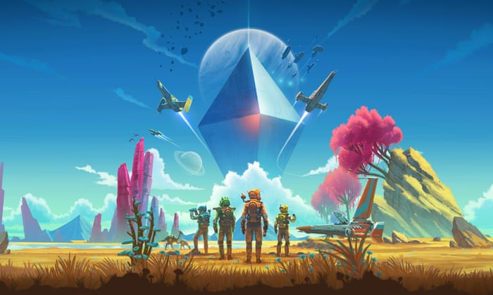

Triple-A Games
High risk, Higher reward
Triple-A games are big projects that are normally only attempted by the biggest of the game companies and developers, they are massive projects which cost a lot. They are ususally given a very high development bugdet, and include lots of marketing and publicity. They are games that are meant to be new better than anything else and full to the brim with new and innovative content.
Every year there are a few games that release and compete to be the game to get and the most popular, they are revealed at the biggest conventions of the year and are the top level of game development. Triple-A games are risky for developers aswell, they introduce totally new concepts and worlds to players, and if they fail the companies can lose out big.
Anthem, a fall from grace
Bioware is a video game development company owned by EA (the second biggest video game company in the world). It is known for its rich story games with big worlds to explore. But Bioware had not released a game since 2014 until Anthem came around.
Anthem was revealed in 2017 at E3 (the largest expo of the year) and was due to be released 2 years later at the beginning of 2019. It was an impressive looking game, with a totally original world and concept, but its story seemed vague from the beginning.
It’s visual style and movement system instantly attracted a lot of excitement and it looked like it would be a big hit.
But it was not to be, the fancy graphics and new age feel and freedom of Anthem was what garnered it so much attention but the rest of the game was not as polished. From release the were bad reviews and complaints about the vague story, all the missions being basic repeats of each other, the terrible menu experience and many bugs and problems upon release.
Anthem fell hard from grace, achieving very mixed reviews and being plagued with many bugs and problems, the game got massive uptake on the day of release earning a lot of money but it very soon started to lose, with bad reviews and a repetitive story many consumers never bought the game and the ones who did eventually left it, and a Triple-A like Anthem needs players to keep playing to survive.
Now more than a year on from release, Anthem has been promised a total redesign, highlighting just how bad the problems were, and Bioware’s reputation is severely hurt.
Horizon Zero Dawn, a success story out of nowhere
Two years prior to the unveiling of Anthem at E3, at E3 2015 a surprise triple-A was revealed, Horizon Zero Dawn. Similarly to Anthem, the game was released 2 years later in February of 2017. Like any good triple-A Horizon brought a new and interesting world for players, a cross between a tribal primitive society and a hyper-modern world full of robotic animals.
Horizon Zero Dawn was made by Guerilla games a much smaller company in comparison to Bioware, the game came out of the blue for many people, but it was instantly a massive hit in comparison to Anthem.
With a longer development time and less pressure from eager fans it had a much better time when launched, it has sold over 10 million copies to date making it one of the most popular games launched on the Playstation4.
Instantly from launch players praised it for its depth of story and fantastic gameplay, while also being free of the bugs and problems that could have dragged it down.
Getting Nominated for most of the biggest game awards such as the game of the year, best narrative, best music and more shows just what a hit it was. With a very high average rating, Horizon Zero Dawn continues to succeed even now 4 years later, with big successful add on content and the game is still being updated 4 years later.
No Man’s Sky, the resurgence
With Anthem at one end of the spectrum of triple-A games and Horizon Zero Dawn at the other, we then have a game that initially flopped but recently has really climbed in the rankings, becoming much more popular, No Man’s Sky.
No Man’s Sky was released in 2016 and was subject to a lot of excitement from fans, it introduced a concept that had never really been explored before. No Man’s Sky placed players in a procedurally generated universe where they could fly freely between planets, stars and galaxies. But the game had one major flaw, it promised way too much and did not deliver.
Players were told that every planet was unique, filled with new and fantastic flora and fauna, climates and more. But what players found was many planets to be barren and boring, with nothing new and exciting to find, players were left flying between similar planets with very little story and objectives to work towards, and the game flopped hard.
The developer Hello Games had promised much more than they could deliver for a small company, and consumers were not pleased with the game, but unlike Anthem the developers were quick to begin a redesign and addition of all the features they missed out.
In a massive update, and subsequent support and updates throughout the years, No Man’s Sky has become a much loved and successful game, adding new things for players to do and explore, with new features being added consistently up to now, the game has come back from the edge of failure. It never garnered the success of other games but it has made a good reputation for itself.